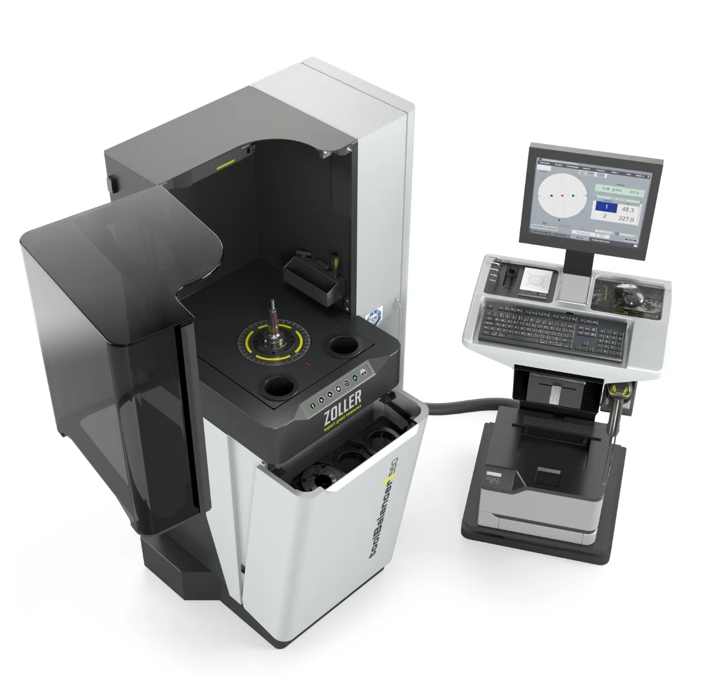
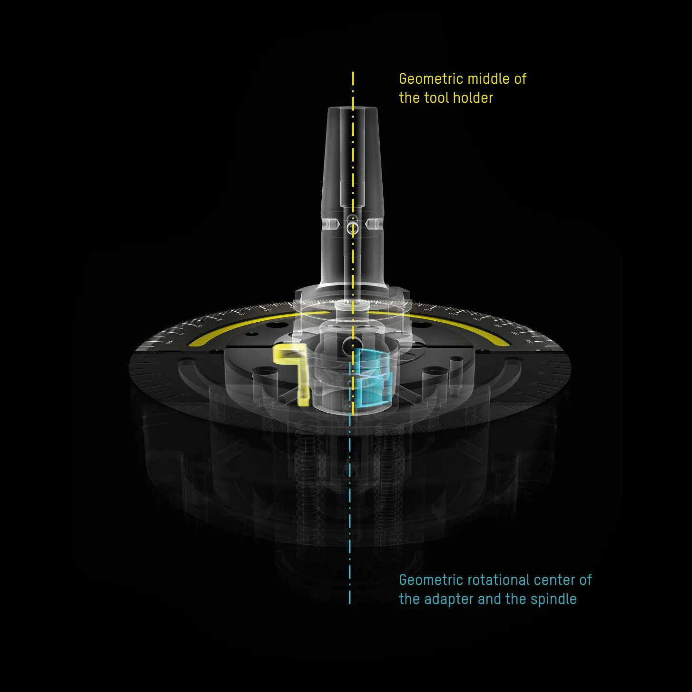
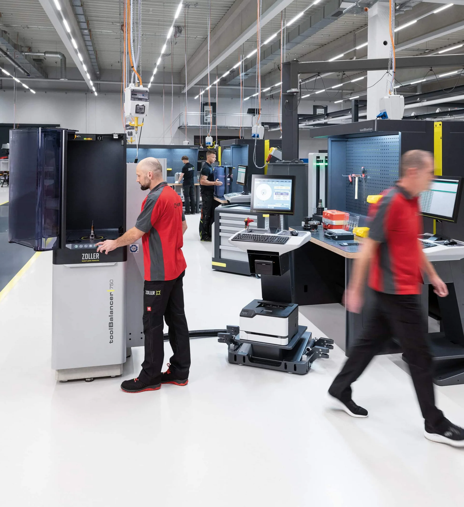

»toolBalancer«
Балансировочная система с новейшими технологиями
и эргономичным дизайном

Мы выступаем за умный прогресс
С оптимально и высокоточно отбалансированным инструментом вы добиваетесь большего ресурса инструмента и шпинделя и лучшего качества поверхности деталей. С »toolBalancer« вы достигаете идеального баланса устойчивости, эффективности и прогресса не только для инструмента, но и для всего производственного процесса.
»toolBalancer 550« в натуральную величину – прямо в вашем цеху
С дополненной реальностью оборудование появляется в натуральную величину именно там, где оно будет работать: обойдите его и ещё до заказа проверьте место и подходы. На компьютере CAD-модель можно вращать и масштабировать прямо здесь.
- Ширина
- 1,54 m
- Глубина
- 2,02 m
- Высота
- 1,73 m
- Площадь основания
- 3,11 m²
Габаритные размеры CAD-модели в данной комплектации; в зависимости от конфигурации могут отличаться.
Отсканируйте QR-код и разместите оборудование в натуральную величину в своём помещении – на iPhone, iPad или Android-устройстве с ARCore.

Сертификаты TÜV и UL/CSA
Массивное основание 500 кг
Лучшие результаты балансировки: < 0,4 г·мм
Высокоэффективное взаимодействие

Защитный кожух »twinPanel«
Защитный колпак »twinPanel«
Соответствует DIN ISO 21940-23, класс C60, для максимальной безопасности.
Внутренний «жертвенный» экран задерживает загрязнения, например остатки СОЖ, и повреждения от отделившихся деталей. Это учитывает очень важный и часто упускаемый из виду процесс замены защитного экрана, необходимость которого возникает при ежедневной эксплуатации. ZOLLER »twinPanel« надолго гарантирует безопасность ваших операторов благодаря быстрой и недорогой замене жертвенного экрана.
Высокоточный шпиндель
Высокоточный шпиндель
Принимает практически любую оправку с соответствующим балансировочным адаптером. В зависимости от массы шпиндель вращает инструмент с регулируемой скоростью от 400 до макс. 1200 об/мин и измеряет дисбаланс с точностью < 0,4 г·мм.
При разработке высокоточного шпинделя ZOLLER уделила особое внимание безопасной и сертифицированной смене адаптеров. Специальный конструктивный элемент предотвращает несчастные случаи и повреждения из-за незакреплённых балансировочных адаптеров в шпинделе.
Отсек для хранения адаптеров
Отсек для хранения адаптеров с откидной передней крышкой
Три места хранения для эргономичной, щадящей спину и быстрой смены адаптеров без приседаний.
Проём для вил
Проём для вил
Для гибкой установки и простой транспортировки »toolBalancer« по производству с помощью паллетной тележки.
Программное обеспечение ZOLLER
Простое программное обеспечение ZOLLER
Структурированное графическое отображение интуитивно ведёт оператора через процесс измерения и балансировки.
Станок настраивается вводом данных о геометрии инструмента. Все данные сохраняются в базе данных и доступны впоследствии.
Пульт управления »cockpit«
Отдельный пульт управления »cockpit«
Регулируется по высоте и положению, монитор наклоняется. Его легко переместить в нужное положение, что делает работу с ПО максимально удобной.
Помимо сенсорного управления, »cockpit« предлагает ввод с помощью мыши и клавиатуры, а также полки для принтеров этикеток и лазерных принтеров, ручных сканеров и инструментов, например шестигранных ключей.
Защитный кожух »twinPanel«
Защитный кожух »twinPanel«
Защитный колпак »twinPanel«
Соответствует DIN ISO 21940-23, класс C60, для максимальной безопасности.
Внутренний «жертвенный» экран задерживает загрязнения, например остатки СОЖ, и повреждения от отделившихся деталей. Это учитывает очень важный и часто упускаемый из виду процесс замены защитного экрана, необходимость которого возникает при ежедневной эксплуатации. ZOLLER »twinPanel« надолго гарантирует безопасность ваших операторов благодаря быстрой и недорогой замене жертвенного экрана.
Высокоточный шпиндель
Высокоточный шпиндель
Высокоточный шпиндель
Принимает практически любую оправку с соответствующим балансировочным адаптером. В зависимости от массы шпиндель вращает инструмент с регулируемой скоростью от 400 до макс. 1200 об/мин и измеряет дисбаланс с точностью < 0,4 г·мм.
При разработке высокоточного шпинделя ZOLLER уделила особое внимание безопасной и сертифицированной смене адаптеров. Специальный конструктивный элемент предотвращает несчастные случаи и повреждения из-за незакреплённых балансировочных адаптеров в шпинделе.
Отсек для хранения адаптеров
Отсек для хранения адаптеров
Отсек для хранения адаптеров с откидной передней крышкой
Три места хранения для эргономичной, щадящей спину и быстрой смены адаптеров без приседаний.
Проём для вил
Проём для вил
Проём для вил
Для гибкой установки и простой транспортировки »toolBalancer« по производству с помощью паллетной тележки.
Программное обеспечение ZOLLER
Программное обеспечение ZOLLER
Простое программное обеспечение ZOLLER
Структурированное графическое отображение интуитивно ведёт оператора через процесс измерения и балансировки.
Станок настраивается вводом данных о геометрии инструмента. Все данные сохраняются в базе данных и доступны впоследствии.
Пульт управления »cockpit«
Пульт управления »cockpit«
Отдельный пульт управления »cockpit«
Регулируется по высоте и положению, монитор наклоняется. Его легко переместить в нужное положение, что делает работу с ПО максимально удобной.
Помимо сенсорного управления, »cockpit« предлагает ввод с помощью мыши и клавиатуры, а также полки для принтеров этикеток и лазерных принтеров, ручных сканеров и инструментов, например шестигранных ключей.
К цели – безопасно и быстро
»toolBalancer« делает балансировку инструмента особенно простой: благодаря эргономичному защитному кожуху »twinPanel«, удобной мембранной клавиатуре, отсеку для балансировочных адаптеров и отсекам в большой рабочей зоне.
Программное обеспечение ZOLLER со структурированным графическим отображением интуитивно ведёт оператора через процесс измерения и балансировки. С соответствующими опциями ПО доступны все варианты балансировки в 1–2 плоскостях, например компенсация в фиксированных позициях балансировочными винтами, использование балансировочных колец или балансировка удалением материала сверлением или фрезерованием.
Наши адаптеры – надёжные и точные
Ассортимент высокоточных балансировочных адаптеров ZOLLER с уникальной конструкцией позволяет зажимать оправки с конусом SK, HSK и полигональным конусом с силовым приводом и, главное, надёжно и с беспрецедентной повторяемостью.
Другие адаптеры – по запросу.
От центра к высочайшей точности
Дисбаланс инструмента возникает из-за асимметричной конструкции и связанного с ней асимметричного распределения массы. ZOLLER »toolBalancer« решает эту проблему с помощью намеренного смещения центра в балансировочном адаптере при измерении и балансировке инструмента.
Балансировочный адаптер со смещением центра выполнен с двухточечной системой и прижимным элементом. Это даёт большой и лучше измеряемый сигнал датчика и гарантирует высокоточные результаты балансировки, особенно при высоком качестве балансировки и малом дисбалансе.

Балансировка – это спокойствие для инструмента
Вибрации возникают, когда вращающийся инструмент работает неравномерно. Даже на низких скоростях это может приводить к повышенному износу инструмента, ухудшению качества поверхности и дополнительной нагрузке на шпиндели станков. Поэтому регулярно проверяйте инструмент на балансировочном станке ZOLLER.
Узнайте больше о преимуществах балансировки с решениями ZOLLER.

»toolBalancer 550«
Макс. диаметр инструмента: 480 мм, макс. длина инструмента: 550 мм
»toolBalancer 750«
Макс. диаметр инструмента: 480 мм, макс. длина инструмента: 750 мм